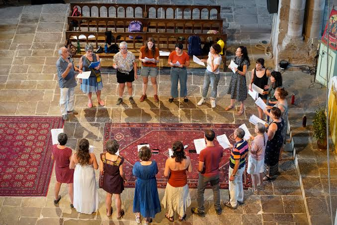

Chants occitans
du RazèsVoix polyphoniques d'un pays de troubadours


⟹ Voix & Mémoire ⟸
Un territoire de langue et de mémoire. Le Razès est un ancien pays historique de l'actuelle Aude, autour de Limoux et de la moyenne et haute vallée de l'Aude. Sa culture chantée appartient au vaste ensemble occitan, et plus précisément au domaine languedocien. Pendant des siècles, l'occitan n'est pas seulement une langue littéraire : il est la langue quotidienne de nombreuses communautés rurales. Les chansons, comptines, complaintes, récits, proverbes et formules chantées constituent donc une part essentielle d'une culture longtemps transmise principalement par l'oralité.
Pour comprendre les chants du Razès, il faut les replacer dans l'histoire plus vaste de la lyrique occitane médiévale. Entre la fin du XIe et le XIIIe siècle, les troubadours élaborent en langue d'oc une poésie chantée d'une sophistication exceptionnelle. Amour courtois (fin'amor), satire, politique, morale, guerre, croisade et débats poétiques nourrissent leurs œuvres. Les formes portent des noms devenus célèbres : canso, sirventés, tenson, planh, alba ou pastorela. Cette culture se diffuse de cour en cour et influence durablement la poésie européenne.

Le pays audois se situe au cœur d'un espace où cette culture a circulé intensément. Les cours seigneuriales, les routes entre Toulousain, Carcassès, Foix, Catalogne et Méditerranée favorisent les échanges de poètes et de musiciens. Le château de Puivert, dans le pays de Sault voisin, est devenu un symbole majeur de cette mémoire musicale : les sculptures de musiciens de son donjon témoignent de la place accordée à l'imaginaire instrumental médiéval. Elles montrent notamment différents instruments et rappellent que la musique des cours ne se réduisait pas à la seule voix.
Il faut toutefois distinguer cette brillante tradition écrite des troubadours du chant populaire rural transmis dans les siècles suivants. Il n'existe pas une ligne continue permettant d'attribuer directement les chansons paysannes modernes aux troubadours. La continuité la plus solide est celle de la langue, du goût pour la poésie chantée et de pratiques communautaires sans cesse renouvelées. Le répertoire oral s'est constitué par couches successives, avec des textes anciens remaniés, des créations locales, des emprunts à d'autres régions et des mélodies adaptées aux circonstances.
La croisade contre les Albigeois et les transformations politiques du XIIIe siècle bouleversent profondément les sociétés languedociennes et les cadres aristocratiques qui avaient soutenu une partie de la culture troubadouresque. La poésie occitane ne disparaît pas pour autant. La langue continue d'être parlée, chantée et utilisée dans de nombreux contextes. À l'époque moderne, le chant religieux, les noëls, les cantiques, les chansons de métier et les répertoires profanes coexistent et se répondent.
Dans les villages du Razès, comme ailleurs dans le Languedoc rural, le chant accompagne autrefois de nombreux moments de la vie : veillées, travaux collectifs, fêtes calendaires, conscription, noces, repas, vendanges, moissons, déplacements et rencontres de jeunesse. Certaines chansons servent à soutenir un travail ou une marche ; d'autres racontent une histoire, évoquent l'amour, se moquent d'un voisin ou d'un métier, célèbrent le village ou permettent simplement de prolonger la convivialité après le repas.
La transmission est d'abord orale. Une chanson n'existe donc pas nécessairement sous une forme unique : paroles, couplets, prononciation et mélodie peuvent varier d'une commune à l'autre, d'une famille à l'autre ou d'un chanteur à l'autre. L'oubli d'un vers peut produire une nouvelle version ; un refrain peut être conservé alors que les couplets changent ; une mélodie connue peut recevoir de nouvelles paroles. Cette variabilité n'est pas une dégradation du patrimoine mais l'un des mécanismes normaux de la tradition orale.
Le chant occitan populaire privilégie souvent une émission vocale directe, proche de la voix parlée et adaptée à des lieux sans amplification. Dans les pratiques collectives, l'essentiel est moins la perfection académique que la capacité à faire sonner le groupe, à partager le texte et à soutenir la danse ou la fête. Selon les répertoires et les époques, le chant peut être monodique, responsorial — un meneur lançant la phrase reprise par le groupe — ou harmonisé à plusieurs voix.
Il convient cependant de ne pas confondre toutes les traditions polyphoniques du Midi. Les polyphonies pyrénéennes gasconnes possèdent leurs propres pratiques et leur propre histoire. Dans l'Aude et le Razès, les harmonisations à deux ou trois voix ont pu être renforcées par les sociétés chorales, les maîtrises religieuses, les orphéons et les mouvements de chant collectif des XIXe et XXe siècles. Le paysage vocal contemporain résulte donc d'un dialogue entre héritage oral et arrangements plus récents.
Le XIXe siècle constitue un tournant. Partout dans l'Aude se développent orphéons, chorales et sociétés musicales. Les archives mentionnent par exemple une société chorale à Couiza à la fin du siècle, une chorale limouxine en 1896 et de nombreuses formations dans les communes voisines. Ce mouvement diffuse la lecture musicale et l'harmonisation collective, tout en faisant entrer dans les répertoires locaux des chansons patriotiques, des romances, des airs à la mode et des pièces écrites pour chœur.
Dans le même temps, la langue française progresse par l'école, l'administration, le service militaire et les mobilités. Aux XIXe et surtout XXe siècles, l'occitan recule progressivement comme langue quotidienne. Cette évolution fragilise la transmission spontanée des chansons : lorsque les jeunes générations comprennent moins bien la langue, certains textes cessent d'être chantés ou ne subsistent que par fragments. La Première Guerre mondiale, l'exode rural, l'évolution des travaux agricoles, la radio puis la télévision transforment également les cadres traditionnels de la veillée et du chant collectif.
Mais ce recul suscite aussi un puissant mouvement de collecte et de renaissance culturelle. Érudits, félibres, enseignants, musiciens, associations et militants de la langue d'oc recueillent textes et mélodies auprès de chanteurs âgés. Au XXe siècle, puis avec le renouveau occitan des années 1960-1970, la chanson devient un moyen de réaffirmer la langue et l'identité culturelle. Les répertoires anciens sont publiés, enregistrés, réarrangés et remis en circulation.
La graphie constitue elle aussi un enjeu. Une chanson apprise oralement peut être transcrite selon des habitudes françaises, une orthographe locale ou la graphie classique de l'occitan. Les différences de transcription ne signifient pas nécessairement que l'on chante des langues différentes : elles peuvent représenter des façons diverses de noter une même tradition dialectale. Dans le Razès, la prononciation appartient au continuum languedocien et peut varier sensiblement d'un village à l'autre.
Les chants sont également une précieuse source de mémoire sociale. Ils conservent des mots disparus de l'usage courant, des noms de lieux, des surnoms, des références aux métiers, aux travaux agricoles, aux foires, aux relations amoureuses et aux événements locaux. Une chanson peut ainsi renseigner sur la manière dont une communauté se représentait elle-même. La toponymie chantée transforme le paysage en territoire affectif : rivières, collines, villages, chemins et terroirs deviennent les repères d'une mémoire partagée.
Le répertoire religieux occupe une autre place importante : noëls occitans, cantiques, chants de pèlerinage et chants liés au calendrier chrétien ont longtemps coexisté avec les chansons profanes. Les mélodies circulent parfois d'un domaine à l'autre, et il n'est pas rare, dans les traditions populaires européennes, qu'un air soit réemployé avec des paroles nouvelles. Le patrimoine vocal est ainsi fait de circulations plutôt que de catégories hermétiques.
Aujourd'hui, les chants occitans du Razès vivent dans des contextes nouveaux : concerts, veillées, fêtes de village, rencontres associatives, ateliers de langue, écoles de musique et manifestations consacrées au patrimoine. La scène remplace parfois la cuisine, la cour de ferme ou le café, mais la fonction de rassemblement demeure. Des chanteurs et collecteurs cherchent aussi à retrouver les versions locales, à enregistrer les derniers détenteurs de répertoires familiaux et à transmettre la prononciation en même temps que les mélodies.
Ce patrimoine reste donc vivant et évolutif. Préserver les chants du Razès ne consiste pas seulement à conserver des partitions : il faut maintenir la langue, les façons de prononcer, les contextes de chant, les récits associés et le plaisir de chanter ensemble. Entre mémoire médiévale de la langue d'oc, traditions villageoises, apports choraux du XIXe siècle et renaissance occitane contemporaine, le chant raconte plusieurs siècles d'histoire culturelle audoise.
Le chant occitan traditionnel privilégie une voix naturelle, proche du grain de la voix parlée, chantée en voix de poitrine plutôt que travaillée comme un chant lyrique. Les textes, courts et répétitifs, portent sur la vie quotidienne : moissons, vendanges, noces et naissances fournissent autant de prétextes à chanter, seul ou en polyphonie.
La chanson, la « cançon », a été inventée en occitan : les troubadours en sont les tout premiers artisans en Europe.
— Tradition orale et savante occitaneAux voix se mêlent parfois des instruments hérités de la tradition rurale, comme la vielle à roue ou l'accordéon diatonique, tandis que des groupes audois contemporains réinventent aujourd'hui ce patrimoine en le mêlant à d'autres esthétiques, du hip-hop aux musiques du monde, sans jamais abandonner la langue d'origine.
Château de Puivert forteresse du Razès, célèbre pour sa salle des musiciens et son musée du Quercorb consacré aux instruments traditionnels.
Limoux ville principale du Razès, où résonnent aussi les musiques du Carnaval, à l'articulation entre folklore festif et patrimoine chanté.
Rennes-le-Château village mythique de la Haute Vallée de l'Aude, au cœur du même territoire historique.
Quillan porte des gorges de l'Aude, point de départ pour explorer la Haute Vallée et son patrimoine occitan.